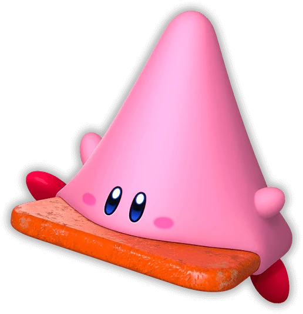

Residente do Planeta Popstar, mais especificamente da região de Dream Land, Kirby se destaca por sua anatomia quase mágica. Ele não possui ossos ou dentes, funcionando basicamente como um estômago sem fundo com bochechas rosadas. Sua habilidade principal é a inalação, que permite que ele sugue objetos e inimigos com uma força descomunal. O grande trunfo, porém, é a sua "Capacidade de Cópia": ao engolir certos adversários, Kirby assume seus chapéus e poderes, transformando-se instantaneamente em um espadachim, um mago, um mestre do fogo ou até mesmo em um lutador de boxe. Recentemente, essa versatilidade foi levada ao extremo com o "Mouthful Mode", onde ele consegue envolver objetos inanimados gigantes, como carros e lâmpadas, para resolver enigmas e explorar o cenário.

Mouthful Mode
Apesar de sua aparência inofensiva de algodão-doce e de sua personalidade gentil e esfomeada, Kirby é um dos heróis mais poderosos da Nintendo. Existe um contraste fascinante em suas aventuras: o que geralmente começa como uma busca simples para recuperar um pedaço de bolo roubado ou tirar uma soneca, frequentemente escala para uma batalha épica contra deuses antigos ou entidades cósmicas que ameaçam a estrutura da realidade. Não à toa, ele foi o único personagem a sobreviver ao ataque inicial no modo história de Super Smash Bros. Ultimate, reafirmando que, por trás daquele sorriso fofo, reside uma força capaz de salvar o universo. Seja enfrentando a rivalidade honrada de Meta Knight ou as travessuras do King Dedede, Kirby continua sendo um símbolo de otimismo, criatividade e de um apetite insaciável por aventura.